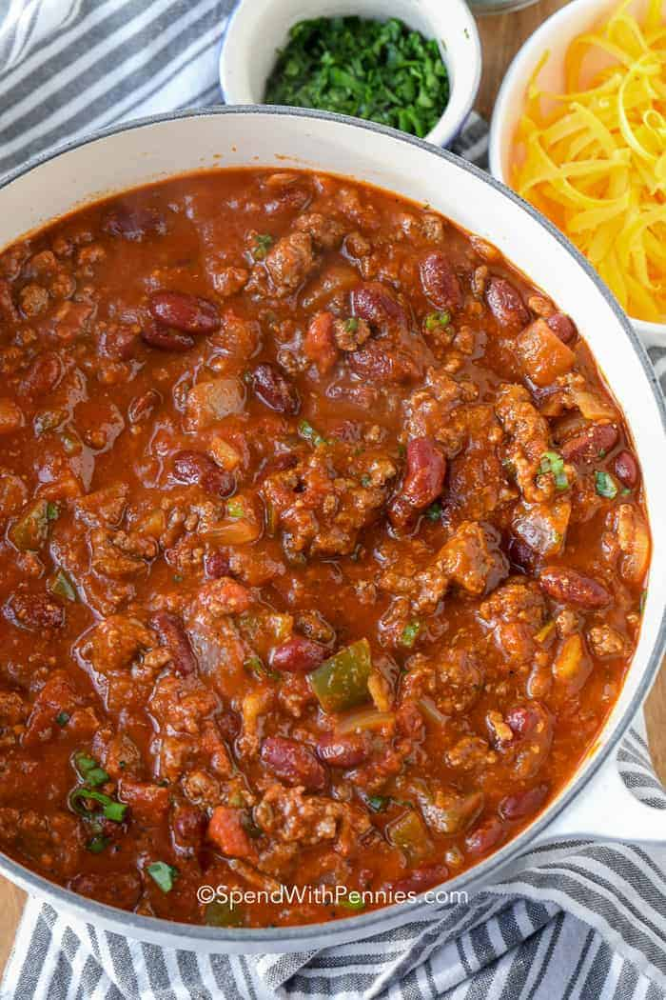

Chili

The Best Chili Recipe is one that is loaded with beef and beans and absolutely full of flavor… just like this one!
2 lblean ground beef1onions, diced1jalapeño, seeded and finely diced4cloves garlic, minced2½ tbspchili powder2 tspground cumin1 tspdried oregano1 tspmustard powder½ tspsweet paprika1½ tbspkosher salt½ tspfresly ground black pepper1green bell pepper, seeded and diced28 ouncescrushed tomatoes (1 can)4 ouncesdiced green chiles (1 can)14.5 ounceskidney beans (1 can), drained and rinsed14.5 ouncesblack beans (1 can), drained and rinsed3 cupsbeef broth or stock2 tbsptomato paste1 tbspcornmeal
In a large pot heat some oil over medium-high heat. Add the onion and cook until translucent (3-5 minutes). Add the garlic and cook for 30 seconds more. Add the ground beef and cook, breaking it apart as you mix it with the onions, until the meat has started to release some liquid, 4 minutes.
Stir in the tomato paste and all the spices. Cook for 1 minute until the spices become aromatic.
Add in remaining ingredients and bring to a boil. Reduce heat and simmer uncovered for 1 hour or until chili has reached desired thickness.
Taste the chili and adjust the seasoning with salt and pepper. Serve in bowls and top with scallions and shredded cheese.